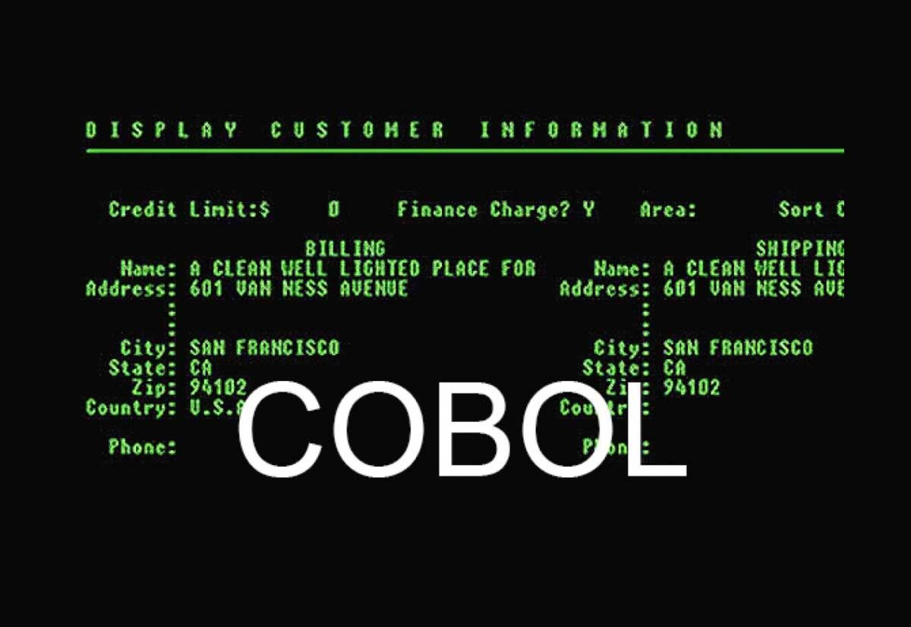
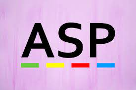
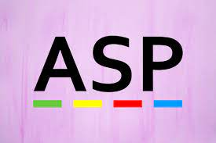
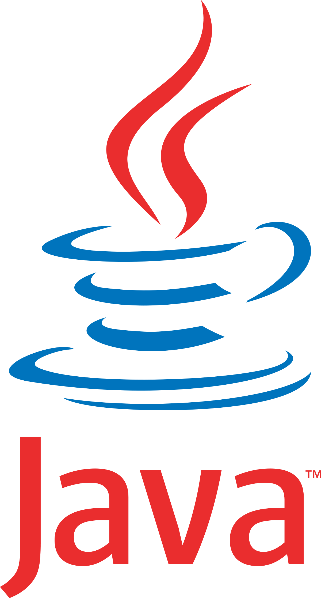
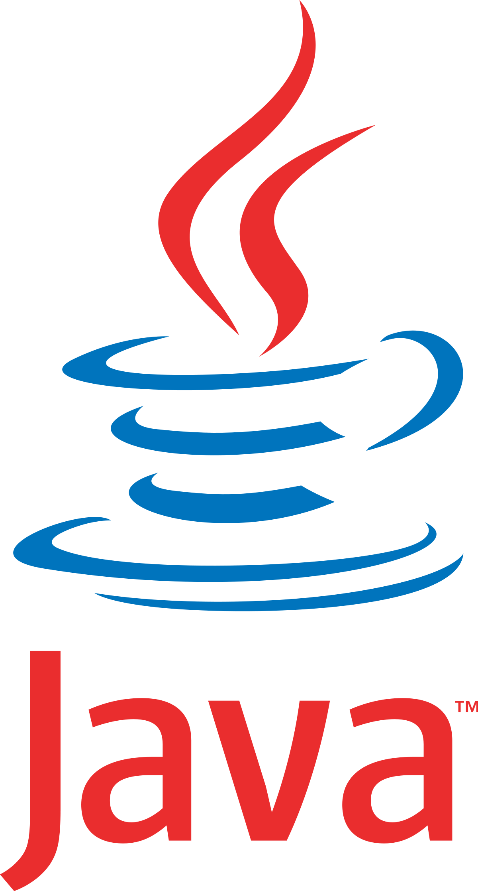

Dal Mainframe al Client/Server
I linguaggi di programmazione
Mainframe
Uno dei linguaggi di programmazione piu' utilizzati per realizzare applicazioni e software è il Cobol.
I primi utilizzi di questo linguaggio di proggrammazione risalgono a piu' di 60 anni fa e secondo alcune statistiche,
costituiva l'85% degli applicativi per mainframe.
Anche altri linguaggi non meno rilevanti sono stati utilizzati per sviluppare applicazioni mainframe:
- PL/I 5%
- Assembly 7%
- C
- C++ (maggiormente usato oggi)
- Java(maggiormente usato oggi)
- Sql
- Cics
- Rexx
Il COBOL era un linguaggio comunemente usato per l'elaborazione
basata sulle transizioni e continua ad alimentare molti sistemi finanziari
e amministrativi utilizzati dalle banche(settore finanziario) e dal settore pubblico (governativo).
Caratteristiche del COBOL:
- semplice e affidabile
- elabora grandi moli di dati
(come le transizioni sui conti correnti e delle entrate fiscali e altre operazioni commericlai) su larga scala ( cioè, di molti utenti in breve tempo).
- versatilita' (aggiornamenti e integrazione del linguaggio su nuove tecnologie)
- inglese semplice e comprensibile
CURIOSITA'
220 miliardi di righe di codice COBOL rimangono in attive e funzionanti tutt'oggi,
infatti, gestisce quotidianamente 30 milioni di trasizioni.
Inoltre, ogni hanno vengono scritte circa 5 miliardi di nuove righe di codice.
Gestisce circa piu' dell'80% delle transizioni bancarie con carta di credito.
Nel tempo pero', questo linguaggio sta pian piano essere sostituito da nuovi
linguaggi piu' recenti.

Programmazioni e Tecnologie lato Client/Server
Programazione lato Server= sviluppo di applicazioni che andranno in
esecuzione prevalentemente sul server che accetta le richieste del client (fatte attraverso
il browser) e
le elabora, fornendo poi pagine web HTML al browser.
- script CGI (Common Gateway Interface), tecnologia lato server che riguarda l'interazione
tra web server e differenti fonti di dati come applicativi e database presenti nel web server.
- JSP (Java Server Pages), tecnologia lato server basata su Java.
Il codice puo' essere riutilizzato piu' volte e in varie piattaforme.
La programmazione pero' risulta un po' complessa, in quanto si basa su un insieme di tag speciali
e una sinstassi specifica.
Le applicazioni Java vengono eseguite su una JVM residente sul server.
Al momento della richiesta di una pagina JSP, viene eseguito un servlet, che viene creato
automaticamente.
- PHP (Pre Hypertext Processor), tecnologia lato server per rendere le pagin web
dinamiche e che utilizza un linguaggio open source
completo di scripting, flessibile e che puo' girare su qualsisi web server (Apache, Ngnix etc...) , su qualsiasi SO (Linux, Microsoft Windows etc..)
e interagire
con i principalo tipi di database(MySQL, MSSQL etc..) in modo semplice.
Il codice PHP viene elaborato dal server che produce pagine HTML comprensibili al client.
Gestisce: l'autenticazione degli utenti, i template, i file XML e la creazione di documenti PDF
con apposite librerie, i cookies, l'invio dei file e la cifratura/decifratura dei dati.
- API (Application Program Interface), insieme di procedure, protocolli e strumenti per realizzare un'
applicazione software.
- ASP, tecnologia della Microsoft mediante la quale è possibile costruire pagine web dinamiche.
Mediante la pagina ASP, è possibile mostrare all'utente una serie di dati memorizzati di solito
dentro file di database, fogli excel di calcolo, file di testo e XML.
Le pagine ASP sono pagine web contenenti, oltre all'HTML, degli script che dovranno essere eseguiti dal server.
- Python
è un linguaggio di programmazione multipiattaforma orientato agli oggetti,
interpretato, poiché il codice sorgente può essere eseguito da qualsiasi piattaforma
grazie all’installazione di un interprete, e interattivo, in quanto le istruzioni possono essere inserite manualmente
nella riga dei comandi.
è un linguaggio open source, ad alto livello, facile da leggere e semplice da implementare.
Per lo sviluppo di siti e applicazioni Web, Python ha a disposizione diversi framework quali Django,
framework che fornisce diversi strumenti per realizzare siti e web App, Flask, un “microframework” che permette di creare siti molto semplici in breve tempo, e Web2py, anche in questo caso un ottimo framework facile da usare.
Sono disponibili ulteriori web framework che permettono la realizzazione di ogni tipologia di sito web e App.
 

Programazione lato Client= linguaggio interpetrato dal browser dell'utente
che si collega.
Linguaggi principali:
- Javascript, linguaggio di scripting lato-client interpetrato dal browser.
Javascript è un linguaggio che viene direttamente interpetrato dall'interpetre del browser che è gia' incorporato.
Viene usato all'interno delle pagine per modificare gli elementi (HTML e stili CSS )e renderli piu' vivi, cioè, dinamici.
Inoltre permette l'interazioni con l'utente con i moduli (form) e di leggere e scrivere sui cookies.
- Java, l'architettura prevede un interpetre Java dal lato client, la JVM (Java Virtual Machine
), presente in ogni browser cosi' da rendere il linguaggio indipendente
da ogni poattaforma.
Java è un linguaggio object oriented basato su: classi, oggetti, metodi e
viene utilizzato per sviluppare app mobili, app web, app desktop, giochi e molto altro.
- Flash, plugin che permette di generare pagine molto leggere utilizzato per scopi grafici e per creare animazioni vettoriali.
- Active X, tecnologia Microsoft che permette di crerare controlli in Visual C++ o Visual Basic.
Disponibile solo su Internet Explorer 3 e versioni superiori.
- VbScript, linguaggio di scripting adottato dalla Microsoft e compatibile solo con Internet Explorer.
è compatibile con Visual Basic, linguaggio di programmazione, in quanto ne è un sottoinsieme.
 
